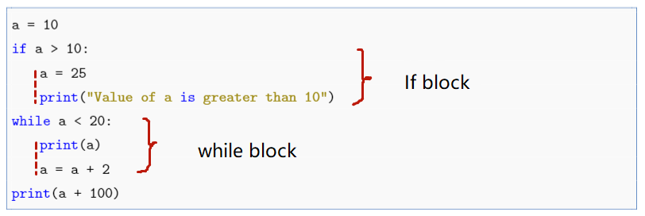

1. 初识 Python#
1.1. Python 的诞生与应用#
Python 的诞生时间非常早，第一版 Python 发行于 1991 年，甚至比另一个编程语言 Java 的历史都早。在大部分时间内，Python 一直作为一个小众的编程语言，并没有大规模流行起来。近些年来，随着大数据技术、人工智能技术的发展和普及，简洁、具有良好扩展性 的 Python 非常契合大数据与人工智能技术对编程语言的要求，超越其他编程语言迅速崛起。Python 分别在2010年，2018年，2020，2021 年被全球知名的编程语言流行度排行榜网站 TIOBE 评为“年度最佳编程语言”，并长期位于各年或各月流行编程语言排行榜的前三名。中国的网络上甚至产生了一句流行语：“人生苦短，我用 Python”。

Python 的创始人为荷兰人吉多·范罗苏姆（Guido van Rossum），在 1989 年的圣诞节期间，吉多·范罗苏姆为了打发时间，决心开发一个新的脚本解释程序，作为 ABC语言的继承，于是 Python 诞生了。之所以选择 Python 作为名字，是由于吉多·范罗苏姆非常喜欢一部 BBC 电视剧— Monty Python’s Flying Circus（中文译名：蒙提·派森的飞行马戏团）。 Python 的英文意思为蟒蛇，这也是为什么一些 Python 相关的软件或书籍用蟒蛇作为图标的原因。
Python的设计哲学是“优雅”、“明确”、“简单”。
Python 可以说是语法功能最简洁、灵活的编程语言之一，相对与其他编程语言 C、C++、Java等，Python 可以用更少的代码实现同样的功能。
Python提供了丰富的库(也称作工具包)，帮助程序员轻松实现各种功能；Python 还提供了多种接口，能够轻松地使用 C、C++、Cython来编写扩展模块，因此，有很多人把 Python作为一种“胶水语言”使用。
Python是完全面向对象的语言，函数、模块、数字、字符串都是对象，并且完全支持继承、重载、派生、多重继承等，Python 还支持重载运算符。
Python 是一门跨平台的脚本语言（动态语言，代码运行时才确定数据类型），相较于 C/C++ 和 java 等编译语言而言运行速度较慢。
随着计算机速度运算速度越来越快，Python 运算速度慢的缺点逐渐可以忽略。
数据分析中常用的库或工具包有：
math — Python 内置的数学函数库
random — Python 内置的生成随机数的库
numpy — 用于数组和矩阵操作
pandas — 用于处理表格数据，数据分析的重要工具
matplotlib — 常用的基础绘图库
seaborn — 另外一个高级绘图库
scipy — 科学计算库
statsmodels — 统计建模与分析库
sklearn — 机器学习库
pyTorch — 另外一个机器学习库，包含深度神经网络，常用于自然语言处理
beautifulsoup, selenium — 爬虫包
Python 的应用范围包括 Web 开发网站与网络爬虫，GUI 开发桌面软件，科学计算等。使用 Python 编写的著名应用包括：
Youtube — 视频分享网站
Dropbox — 文件分享软件
Instagram — 图片分享软件
豆瓣网 — 国内著名的图书、唱片、电影评论网站
知乎网 — 国内著名的问答网站
果壳网 — 国内著名的泛科技主题网站
Python 2.0 于 2000 年 10 月 16 日发布，Python 3.0于 2008 年 12 月 3 日发布，Python3 并不兼容 Python2 的代码。目前的主要 Python 版本为 Python3，本书的所有 Python 程序都是 Python3。
学习 Python 的一些网站：
百度，谷歌
CSDN → 国内的程序员论坛与博客网站
stackoverflow.com → 国外的编程问答网站
runoob.com → 国内的编程在线学习网站
geeksforgeeks.org → 国外的编程在线学习网站
学习编程与学习数学、英语等课程不同，不需要去记代码，而一定要多敲代码！
1.2. Python 安装#
使用 Python 时一般有两种方式：一是下载 Anaconda，二是下载 Python 和编辑器 Pycharm。
Anaconda 包括集成开发环境 Spyder 以及一大堆安装好的常用工具包，比如：Numpy、Pandas、Matplotlib、Sklearn，在 Anaconda 里面还可以使用其他编译器，例如 Jupyter Notebook，IPython，R Studio 等。对于刚刚接触 Python 的新手，推荐使用 Anaconda。
具体软件的安装不在赘述，请到相关的官方网站下载安装。
1.3. Python 程序的基本特点#
在交互环境或编辑器上运行一个 Python 的输入输出小程序。
print 函数打印内容：
print("西南大学") # 打印一个字符串
西南大学
input 函数接受用户从键盘上的输入内容。下面的代码从键盘接受一个字符串，并传递给一个变量：
name = input('请输入你的名字：') # 从键盘接受一个字符串，并传递给变量 name
print('你的名字是：{}'.format(name)) # 将变量 name 打印出来
Note
代码中的标点符号尽量用英文输入,不要用中文输入,否则出错
1.3.1. 缩进#
Python 与许多其他编程语言的区别在于：Python 使用缩进表示不同的代码块，而不是用分号或大括号。
“缩进”，即代码前的空白区域，来表示不同代码间的包含与层次关系。
一个缩进等于四个空格

a = 10
if a > 10:
a = 25
print("Value of a is greater than 10") # this line is not implemented
while a < 20:
print(a)
a = a + 2
print(a + 100)
10
12
14
16
18
120
在上面的语句中，if 语句块有相同的缩进，while 语句块也有相同的缩进，不同的语句块增加了程序的可读性，并且让我们知道不同命令语句的作用范围。例如，语句 print(“Value of a is greater than 10”) 与 a = 25 对齐，他们都属于 if 语句块，所以它们只在 if 语句块里面运行。
假如语句 print(“Value of a is greater than 10”) 不与 a = 25 对齐，而是与语句 a = 10 对齐，则该语句不在 if 语句块中运行，而是在其外面运行。
a = 10
if a > 10:
a = 25
print("Value of a is greater than 10") # will print the string
while a < 20:
print(a)
a = a + 2
print(a + 100)
Value of a is greater than 10
10
12
14
16
18
120
1.3.2. 程序注释与换行#
编写程序时，经常需要在代码中添加注释，用来解释或备注相关代码，标明作者、日期信息等，提升程序的可读性，计算机并不执行注释的内容。Python 添加注释有两种方法：
单行注释在代码后面使用 # 跟注释内容
多行注释使用两组，每组三个单引号（或双引号）```，两组引号之间是注释内容
# 这是一个单行注释
"""
这是一个
多行注释
"""
print('hello')
hello
tips
调试程序时，有时候也用注释功能将一些与调试无关的代码注释掉，从而方便调试
不少编辑器都有注释代码的快捷键，例如 Spyder 中
Ctrl + 1，Jupyter Notebook 中ctrl + /
有时候代码很长，需要跨行输入代码，则可以在代码后面跟符号\ ：
print('these codes are\
too long') # 多行代码
these codes aretoo long
Note
多行代码中，符号\ 后面不能紧跟注释
1.3.3. 命名与保留字#
编写程序时，经常使用变量存储某些数据。Python 允许使用大写字母、小写字母、数字、下划线_甚至汉字等字符来给变量命名。但是，
变量名字的首字母不能是数字
变量名字中不能有空格
Python 的保留字不能作为变量名
变量名对大小写敏感， name 与 Name 是两个不同的变量名。
name = 'chen'
Name = 'zhang'
print(Name)
zhang
变量命名的原则是最好能通过变量的名字就知道该变量的意思，从而方便调试与其他人员阅读。有时候，变量的名字要用到多个单词，此时可以：
用下划线
_将多个单词分割，例如 “average_score”不同单词的首字母大写，例如 “AverageScore”
第 2 种方式也称作驼峰命名，因为变量的名字起伏像骆驼的驼峰。
average_score = 87
print(average_score)
87
tips
在输入变量或函数名时，利用Tab键，可以得到编辑器的提示或自动填充
保留字，也称为关键字，指被编程语言内部定义并保留使用的标识符，程序员编写程序时不能定义与保留字相同的变量名。
Python 中一共有 33 个保留字：
and |
elif |
import |
raise |
as |
else |
in |
return |
assert |
except |
is |
try |
break |
finally |
lambda |
while |
class |
for |
nonlocal |
with |
continue |
from |
not |
yield |
def |
global |
or |
True |
del |
if |
pass |
False |
None |
1.3.4. 安装与使用工具包#
pip 是 Python 自带包管理工具，该工具提供了对 Python 包的查找、下载、安装、卸载的功能。在我们安装 Python 时，pip 是自动安装的。它的语法为：
| pip 的常用语法 | |
|---|---|
| 安装包 | pip install [package_name] |
| 卸载包 | pip uninstall [package_name] |
| 更新包 | pip install [package_name] -U |
| 显示已安装包列表 | pip list |
| 搜索包 | pip search [package_name] |
Anaconda 也可以通过 Anaconda 自带的 Conda 工具从 Anaconda 库中安装包。Windows 系统中的方法是：在 Windows 菜单栏里，点击 Anaconda Prompt，打开 Anaconda 的命令行窗口，然后输入不同的指令。语法与 pip 基本相同，区别在于把命令中的 pip 替换为 conda。
例如，安装一个金融股票包tushare，在命令号窗口输入：
pip install
工具包 tushare 就能自动下载安装了。
使用工具包时，首先要用关键字import导入包。
import numpy
Note
导入包时，包的名字都是小写
有时候，也配合关键字 as，将包的名字简写:
import numpy as np
这样，在代码中使用 Numpy 的函数时，就可以用 np 代替了。
np.log10(200) # 使用 numpy 中的 log10 函数
2.3010299956639813
有的时候，可以结合from关键字，导入包中指定的函数。此时，使用这个指定的函数时，就不用跟包的名字了。例如：
from numpy import log10 # 从 Numpy 包中导入 log10 函数
log10(200) # 函数名字前面没有包的名字
2.3010299956639813
导入一个工具包中的所有函数，可以用*，例如：
from numpy import *
这样，使用该工具包中的所有函数，都可以直接使用，不用在函数前面跟包的名字。
log2(16) # 函数名字前面没有包的名字
4.0
1.4. math 库#
math 库是 Python 内置的数学函数库，提供了 4 个数学常数和 44 个数学函数。数学函数包括数值表示函数、幂对数函数、三角函数和特殊函数。
数学常数：
数学常数 |
含义 |
|---|---|
math.pi |
圆周率 \(\pi\) |
math.e |
自然对数 \(e\) |
math.inf |
正无穷大 \(\infty\)，负无穷大为 \(-\infty\) |
math.nan |
非数值型数 |
常用的几个数值表示函数：
函数 |
含义 |
|---|---|
ceil(x) |
向上取整，返回不小于 \(x\) 的最小整数 |
floor(x) |
向下取整，返回不大于 \(x\) 的最小整数 |
factorial(x) |
返回整数 \(x\) 的阶乘 |
fsum(iterable) |
返回可迭代对象(元组, 列表等)中元素的总和，元素须全部为数值 |
import math
math.fsum([1, 2, 4])
7.0
math.factorial(5)
120
常用的几个幂对数函数：
函数 |
含义 |
|---|---|
exp(x) |
返回不小于 \(e\) 的 \(x\) 次幂，\(e^x\) |
sqrt(x) |
返回 \(x\) 的平方根 |
log2(x) |
返回 \(x\) 的 2 对数值 |
log10(x) |
返回 \(x\) 的 10 对数值 |
log(x,[base]) |
返回 \(x\) 以 base 为底的对数值，只输入 \(x\) 时返回自然对数值 \(\ln x\) |
math.exp(2)
7.38905609893065
常用的几个三角函数：
函数 |
含义 |
|---|---|
degree(x) |
返回弧度 \(x\) 的角度值 |
radians(x) |
返回角度 \(x\) 的弧度根 |
sin(x) |
返回弧度 \(x\) 的 正弦值 |
cos(x) |
返回弧度 \(x\) 的 余弦值 |
asin(x) |
返回弧度 \(x\) 的反正弦 |
acos(x) |
返回弧度 \(x\) 的反余弦值 |
atan(x) |
返回弧度 \(x\) 的反正切值 |
math.sin(math.pi/2)
1.0
特殊函数包括高斯误差函数erf与伽马函数gamma等。
1.5. 练习#
Exercise 1.1
输入并运行下面的 Python 代码，画同心圆。
# draw circles
<hr>
import turtle
turtle.pensize(2)
turtle.circle(20)
turtle.circle(40)
turtle.circle(60)
turtle.circle(80)
turtle.done()
Exercise 1.2
通过用户的键盘输入两个数字，并计算两个数字的和。
Exercise 1.3
利用 math 库中的函数，将弧度 \(\pi/5\) 转化成角度。